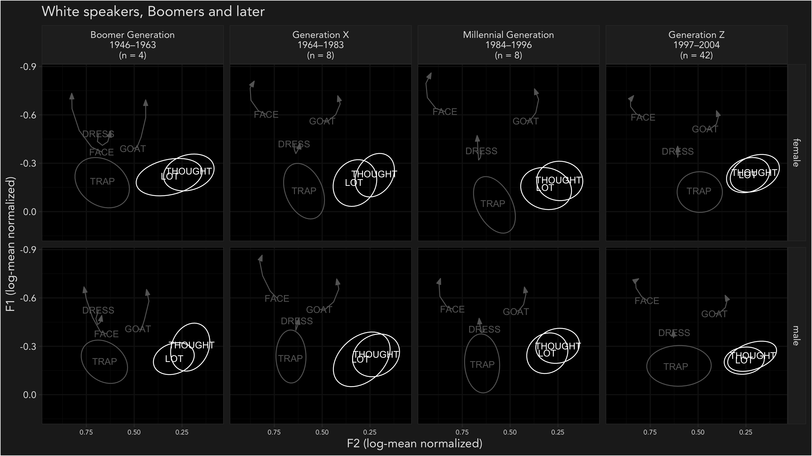
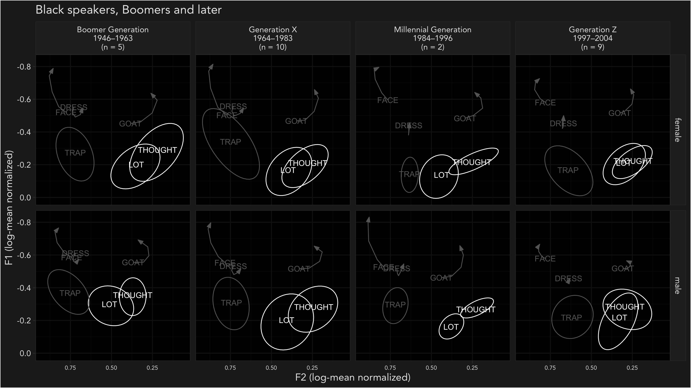
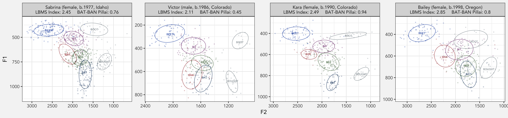
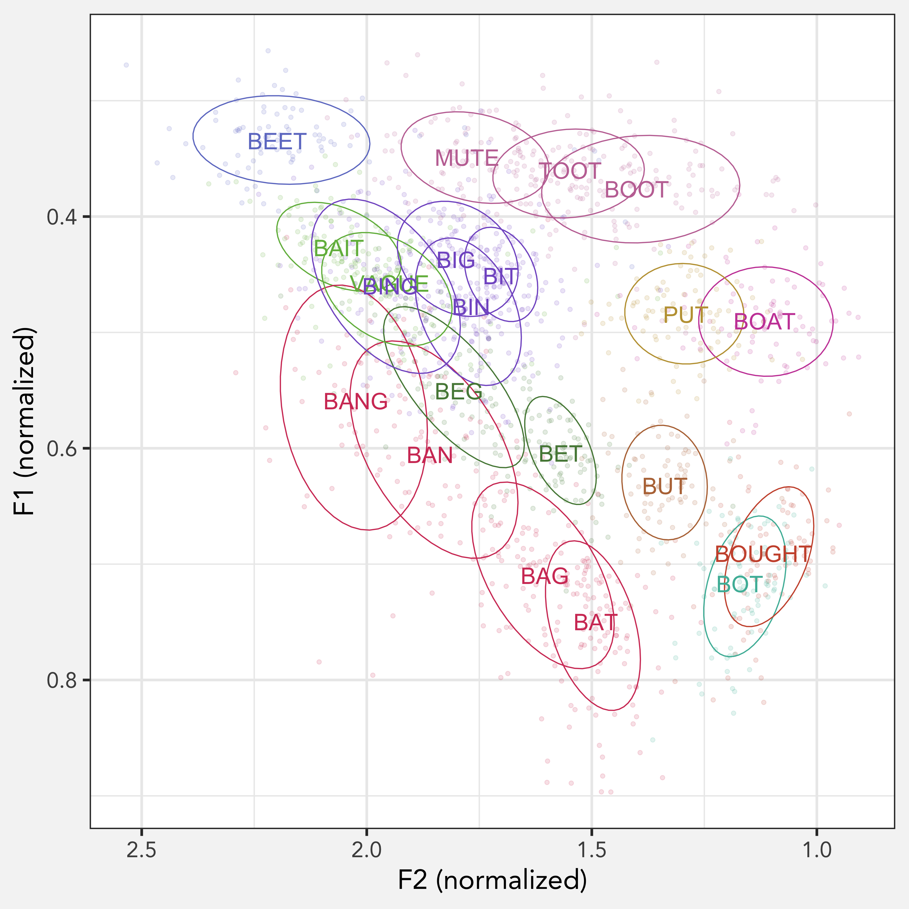
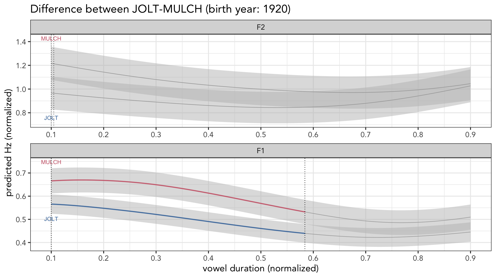
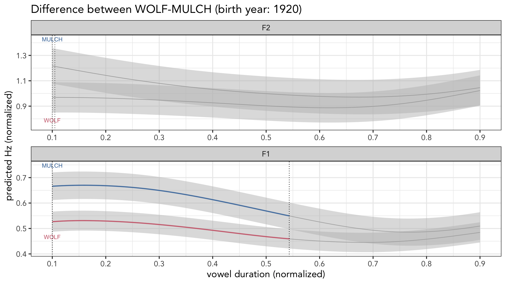

I’m attending the Annual Meeting of the Linguistic Society of America and the American Dialect Society and I’ve got three presentations to tell you about! Please find links, summaries, and images from these presentations below!
Perspectives on Georgia Vowels: From Legacy to Synchrony
Download the slides here!
On Thursday afternoon, Peggy Renwick, Jon Forrest, Lelia Glass, and I kicked off the ADS sessions with our presentation on English in Georgia. The four of us have been collaborating for about a year, pooling together datasets and sharing resources, on a project focusing on English in Georgia. This is our first talk showcasing some of our findings. Our results are largely descriptive at this point. Here are the main plots we used (in a fun dark mode!) split up by generation, gender, and ethnicity:



Turns out pretty vowel changes if you give it 100 years. We’re just excited to see acoustic data from such a large span of time analyzed together.
Homogeneity and Heterogeneity in Western American English
Download the poster here!
At the ADS poster session on Friday, I presented a poster with two students, Jessica Shepherd and Auna Nygaard. As a bit of background, in Speech in the Western States: Volume 2, Fridland et al (2012:172) point out that pretty much every study of the front lax vowels in the Western US has been based on independent, isolated studies. Because each research collects and processes data their own way, it’s difficult to disentangle differences that may be due to region and differences that may be due to methodological choices. They say that “clearly, collecting the same type of data from all sites would be optimal in allowing us the most reliable cross-region assessment.”
This project is a direct response to that call. When I was a grad student I recruited people via Amazon Mechanical Turk to a bunch of recordings of people reading sentences and wordlists. In total, 212 people completed the task, scattered all across the Western US. This poster describes the first results from this project. As it turns out, our findings match the West’s description as exhibiting both “homogeneity and heterogeneity” (Fridland et al. 2012:172). We find homogeneity in that most people have the LBMS to some degree and that education level and region weren’t statistically significant predictors. However, there’s a wide range of variation for the LBMS and

And here’s an overall look at the vowel space in our dataset, with some additional allophones we don’t analyze here.

We look forward to digging into this dataset a little bit more in the future!
Vowels can merge because of changes in trajectory: Prelaterals in rural Utah English
Download the slides here!
Finally, on Friday afternoon, Lisa Johnson and I talked about vowel trajectories and what they can tell us about vowel merger. We look at prelaterals in rural Utah and find that, on the surface, they look like mergers by approximation. However, when we looked at the trajectories (with the help of some pretty cool animations!), it seems like the lateral gradually increases its influence on the vowel so that the merger happens “leftward,” from the coda to the onset. In this example, we have




This was a pretty consistent pattern across all the pairs of prelateral vowels we looked at. We suspect that we might find this among other conditioned and vowel shifts, like prevelar raising, the